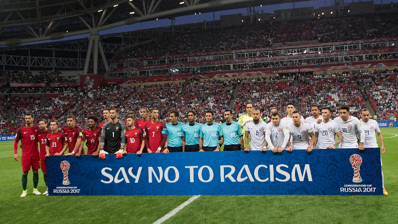

Hoy en dia el futbol ha cambiado mucho y han surgido nuevas reglas aunque se siguen manteniendo otras antiguas. El futbol es un juego que ha subsistido a los largo de los años entre nosotros pero con el avance y las nuevas tecnologias el juego a mejorado y ha cogido otro aspecto
El campo de juego debe ser rectangular y tiene dimensiones específicas. La longitud debe estar entre 100 y 110 metros, y el ancho entre 64 y 75 metros.
Un partido de fútbol se juega entre dos equipos, cada uno con 11 jugadores, incluido un portero.
Un partido consta de dos tiempos de 45 minutos cada uno, con un descanso de 15 minutos entre ellos.
El objetivo es marcar más goles que el equipo contrario. Un gol se marca cuando el balón cruza completamente la línea de gol entre los postes y por debajo del travesaño.
Los aficionados deben mantener el orden y no pueden interferir en el campo ni mucho moner lanzar objetos a los jugadores. Tampoco pueden lanzar comentarios racistas o homfobos, en caso de estos se parara el partido o inluso podria ser anulado
El juego se reanuda con saques de esquina, saques de banda, tiros libres y tiros de portería. Cada uno tiene reglas específicas sobre cómo deben realizarse.
Un jugador está en posición de fuera de juego si se encuentra más cerca de la línea de gol del equipo contrario que el balón y el penúltimo defensor en el momento en que le pasan el balón.
Se otorgan tiros de penalti por faltas graves cometidas dentro del área de penalti. El balón se coloca en el punto de penalti, y el jugador tiene una oportunidad sin oposición de marcar un gol frente al portero.
Se sancionan diversas faltas, como el juego peligroso, la obstrucción y la conducta antideportiva. Los árbitros pueden mostrar tarjetas amarillas o rojas como castigo por faltas graves